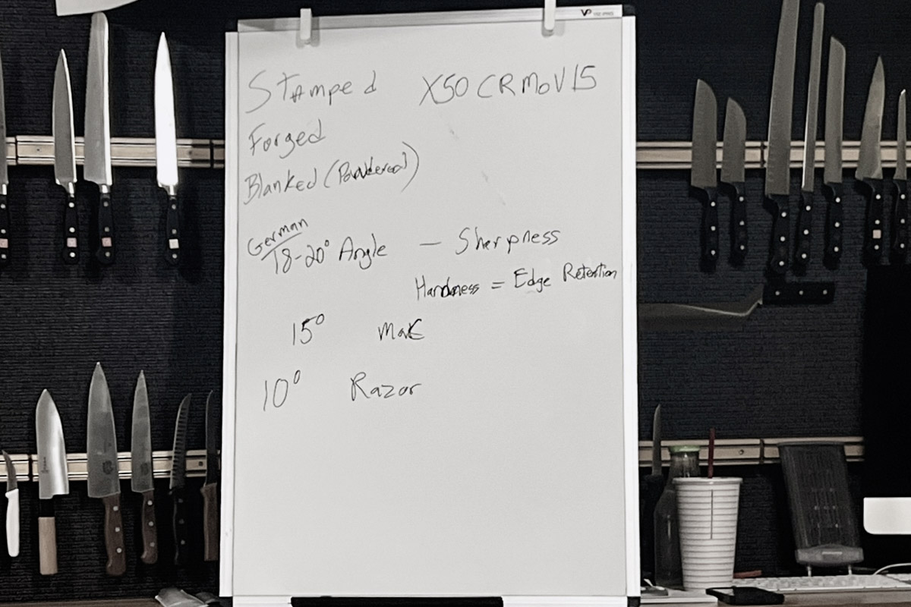
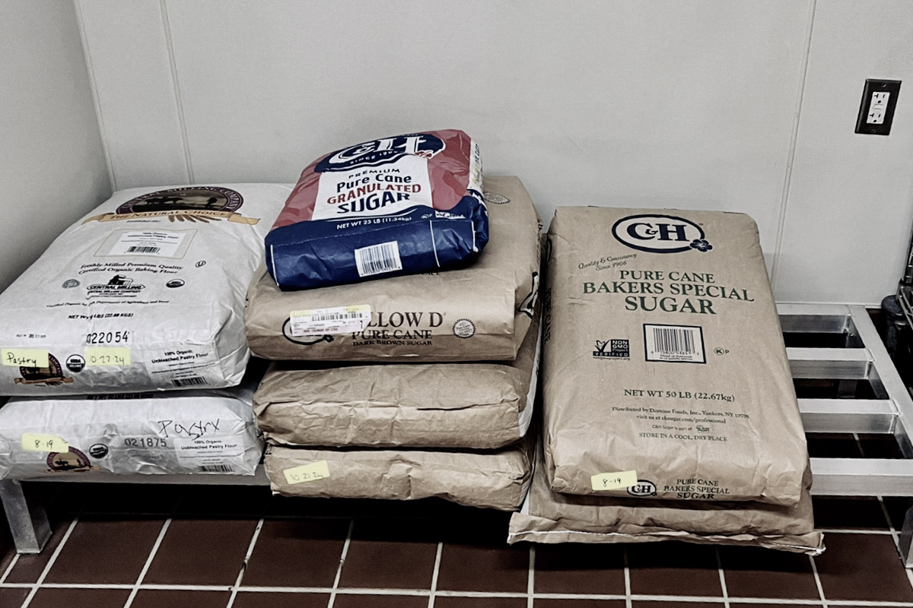

Before the Knife
The first thing they show you isn't how to hold a knife. It's where the first aid kit is.
It's mounted on the wall facing the scullery, the dish room. You learn that word on day one, along with a lot of others you've probably never used before. It sounds small, but it's part of the shift. You're not just cooking anymore, you're learning how a kitchen actually runs.
The kit is there because things happen. Cuts happen. Burns happen. And knowing where to go before something goes wrong is considered a basic skill.
Chef Brendalee made that clear right away. She'll assess injuries, she'll handle them. Don't call 911. Call the school's emergency line. Know the difference between a kitchen emergency and a life emergency.
That was day one. We hadn't even picked up a knife yet.
The Gap Between Cooking and the Kitchen
The class is CUL 251A, Culinary Fundamentals 1. We're working in pantry: salads, cold prep, preservation, plated desserts. The textbook is On Cooking, but the focus so far hasn't been recipes.
It's accuracy. Organization. Consistency.
Chef drew a clear line between home cooking and professional cooking. Accuracy is what separates the two. Consistency is just accuracy repeated every time. That's what makes a kitchen reliable, and that's what makes it profitable.
We went over Canvas, the syllabus, the schedule. Mondays and Tuesdays, 3pm to 9pm. But what stuck more than any of that was how different the expectations feel.
At home, you can be a little messy. You can fix things as you go. In a professional kitchen, that doesn't work. Someone else is behind you. Someone else is using what you prepped. Someone else is serving it.
Spills get cleaned immediately. Tools go back where they belong. You stay organized because other people are depending on you to be.
Knives Before Cutting
On day two, we went to Sonoma Cutlery.
We stood around a whiteboard while they walked us through steel types and sharpening angles. X50CrMoV15, which is in most German knives. Edge angles: 18–20 degrees for those, about 15 for MAC knives, and thinner if you're getting into more delicate edges.
It sounds technical, but the point was simple. Your knife isn't just something you use, it's something you take care of. The angle, the hardness, how long it stays sharp. All of that affects how you work.
Then we got into safety, which honestly feels just as important as anything else right now.
Claw grip. Cut away from your body. Don't try to catch a falling knife. Don't leave knives in the sink.
Use a bench scraper instead of your blade to move product. It protects your knife and keeps things safer.
And then the calls: Behind. Corner. Sharp.
At first it feels awkward to say them out loud, but it makes sense. Kitchens move fast. You can't assume people see you. You have to communicate.

The Tour
We walked through the culinary center and got a look at how everything is set up behind the scenes.
Storage rooms stacked with 50-pound bags of C&H baker's sugar. Flour labeled and dated. Everything organized in a way that makes it easy to track and easy to use.
The hallways are long and bright, lined with stainless and shelving. It smells clean. Not overly chemical, just neutral. Like everything has been taken care of.
Then we stepped onto the line.
Burners in pairs. Flat tops. Vent hoods running the length of the room. When you stand at the range and look down, you can see windows at the far end with trees outside. Natural light hitting all the stainless.
It doesn't feel like a classroom when you're standing there. It feels like a kitchen you're expected to work in.

Sanitation as Foundation
We spent the rest of the time on food safety, and it's clear why it comes first.
The temperature danger zone is 41°F to 135°F. That's where bacteria grows fastest, and everything in a kitchen is built around staying out of it.
We learned how to set up a sani bucket properly. One QUAT tablet in four liters of water, tested to 200 ppm, towel inside, kept under your station. Changed every four hours or sooner if needed.
The three-compartment sink has a strict order: wash, rinse, sanitize, then air dry. Nothing goes away wet.
Chef emphasized that cross-contamination usually comes from people, not ingredients. So the responsibility is on you.
Wash your hands when you come in. After the restroom. After your phone. After touching your face or the trash. Hot water, soap up to your forearms, twenty seconds, dry with a single-use towel.
It's not the part of cooking people picture. But it's the part that makes everything else possible.